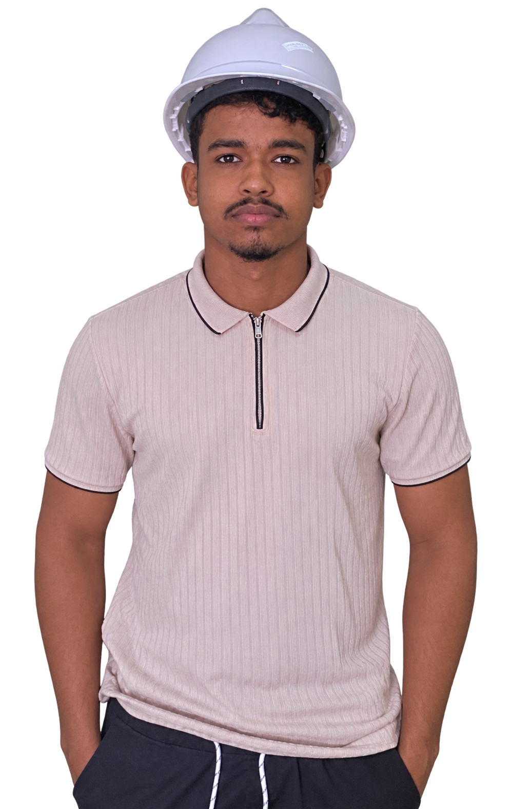

ROBOTICS · ROS 2
3D PERCEPTION & OBSTACLE AVOIDANCE
Mobile-robot perception using a depth camera to detect obstacles, identify free space and adapt the robot’s path in real time.
Electrical Engineering
Engineering student focused on automation and industrial computing, currently pursuing a dual-degree program between ENIT in Tunisia and ESP Nouakchott in Mauritania.

01 — About
I am an electrical engineering student with a strong interest in automation, embedded systems and industrial applications. My studies and project work have given me experience across control, programming, instrumentation and power systems.
I am currently completing a dual-degree program between ENIT in Tunis and ESP Nouakchott. I enjoy learning by building, testing and improving practical engineering solutions.
View my GitHub profile02 — Selected work
Academic and engineering projects across automation, robotics, embedded systems and energy.
Mobile-robot perception using a depth camera to detect obstacles, identify free space and adapt the robot’s path in real time.
Energy-monitoring solution for measurement, storage and real-time visualisation using connected embedded devices and a dashboard.
Modelled a BLDC motor in MATLAB/Simulink and developed six-step trapezoidal control for a Zybo Z7, with a three-phase MOSFET power board.
Modelled, simulated and implemented a self-balancing robot with an STM32, encoders and a stabilising control system.
Programmed Siemens and Schneider PLCs for sequential control of a sorting line and manipulator arm using Ladder logic and GRAFCET.
Studied residential and industrial electrical installations with Caneco BT and manual checks, and sized and simulated PV systems with PVsyst.
Measured temperature and controlled a fan using an STM32 microcontroller, with software developed in STM32CubeIDE and Keil.
03 — Experience
SNIM · National Industrial and Mining Company
Studied an installation equipped with a Schneider Electric Altivar 71 drive; contributed to migration to an Altivar Process ATV930, parameter adaptation, testing and operational checks.
SOMELEC · 180 MW Dual-Fuel Power Plant
Observed power-plant operations, electrical substations, generating sets, transformers and the control room, with an introduction to maintenance, alarm monitoring and industrial safety.
04 — Toolbox
Tools and methods I have used throughout my coursework, internships and projects.
 TIA Portal
TIA Portal STM32CubeIDE
STM32CubeIDE KeilVivado
KeilVivado Compact Builder
Compact Builder Linux
Linux LabVIEW
LabVIEW KiCadCaneco BTETAPPSIMPVsyst
KiCadCaneco BTETAPPSIMPVsyst05 — Education
École Nationale d’Ingénieurs de Tunis (ENIT) · Tunisia
École Supérieure Polytechnique de Nouakchott (ESP) · Mauritania
CPGE of Nouakchott · Mauritania
SABLETTES · Nouakchott, Mauritania
 LinkedIn
LinkedIn